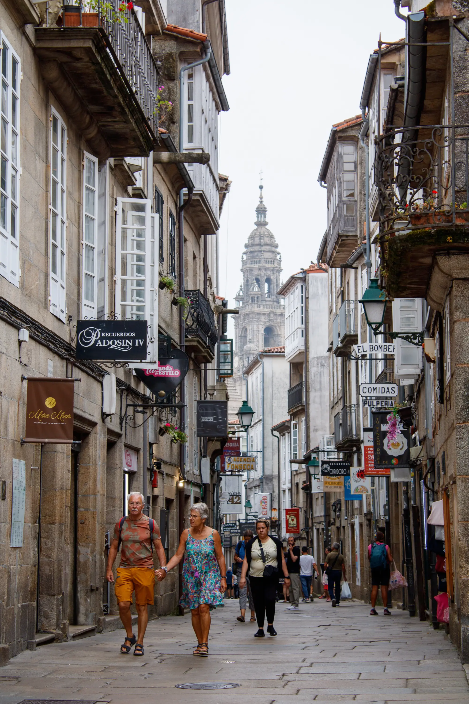
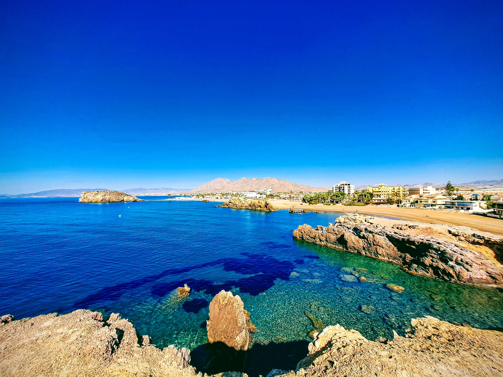
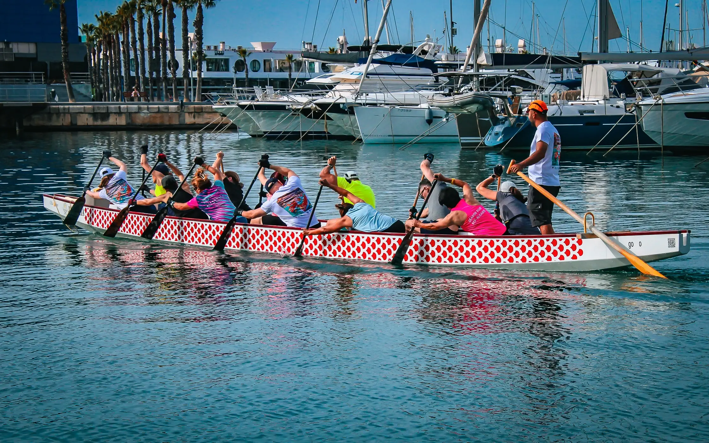
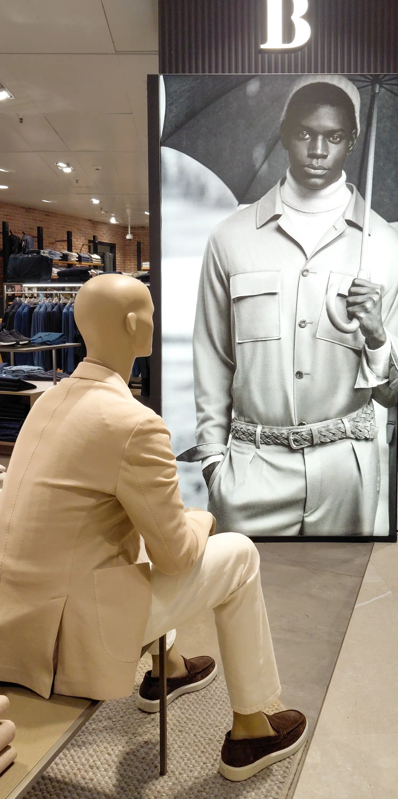
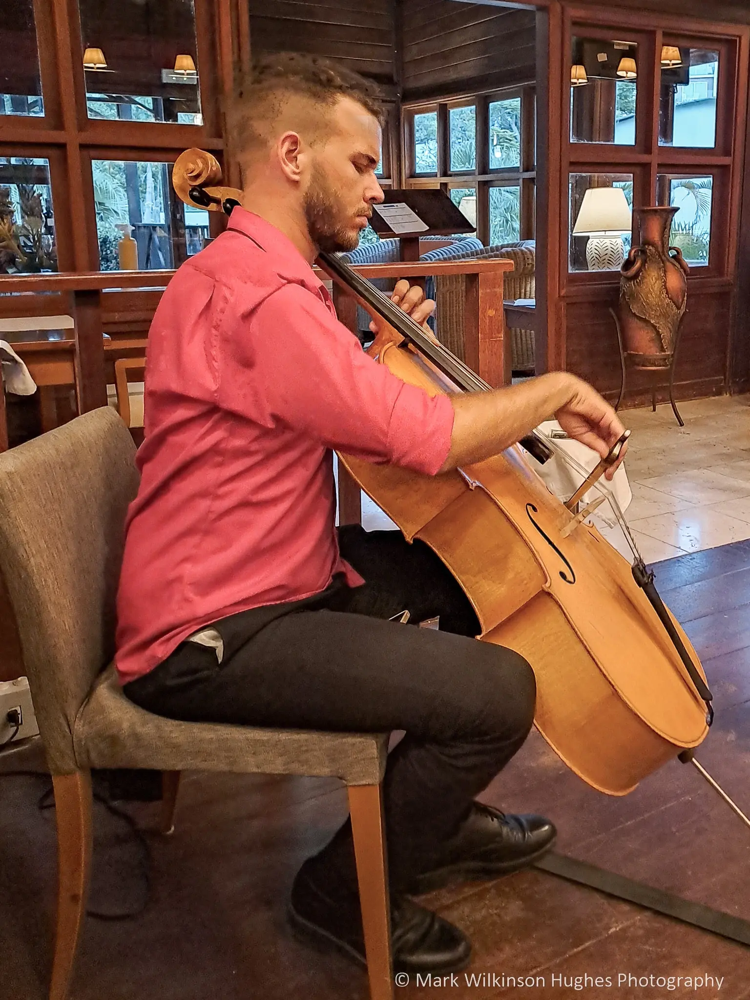
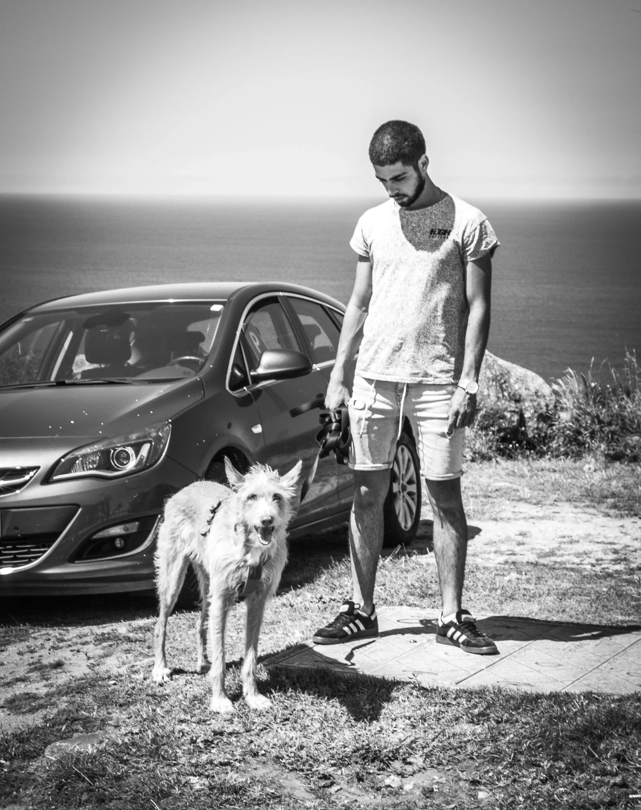
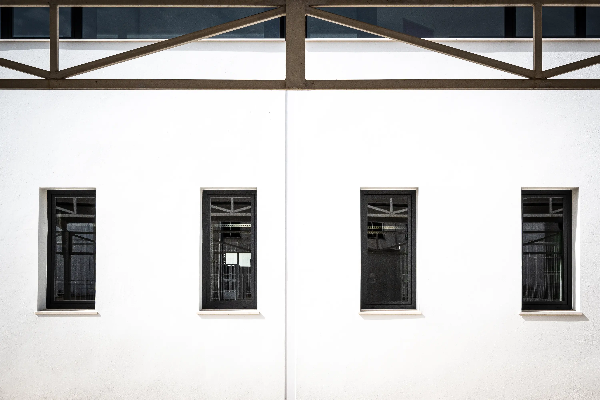
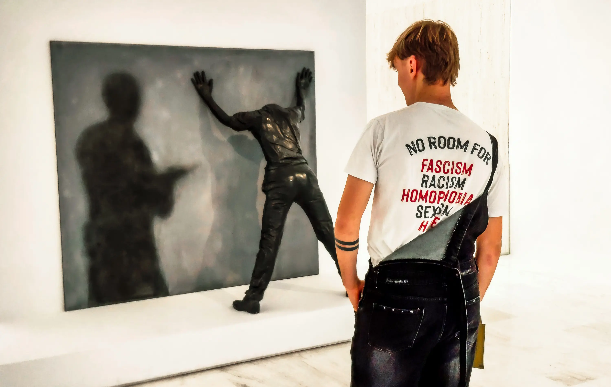

Portfolio highlights — explore full galleries via the main menu
Muestra de porfolio — explore las galerías completas en el menú principal








Biography • Biografía
It all started when my grandfather gifted me a film camera at age nine. Today, holding Spanish nationality and living in the beautiful mountainous interior of Alicante, I draw constant inspiration from the contrast of this rugged landscape, its nearby coast, and the northern stretches of the Iberian Peninsula.
My photography is an exploration of space, form, and human presence within the contemporary landscape. Combining a lifelong appreciation for technical detail with a strong visual interest in urban minimalism and industrial perspectives, I use the lens to isolate an underlying sense of order. From structural architectural forms to candid street interactions, my practice captures the subtle symmetry often overlooked in a fast-paced world.
Naturally, I am passionate about creative exchange, so please feel free to share your constructive thoughts and ideas. When I am not behind the camera, you will likely find me swimming laps, training at the gym, experimenting in the kitchen, or immersed in occasional linguistic projects.
If you enjoy what you see in the gallery or the linked portfolios, feel free to buy me a coffee! Your support is a welcome gesture that helps me maintain this archive and update my modest gear from time to time.
Todo comenzó cuando mi abuelo me regaló una cámara de carrete a los nueve años. Hoy en día, con nacionalidad española y residiendo en el hermoso interior montañoso de la provincia de Alicante, encuentro una fuente constante de inspiración en los contrastes de este entorno, su costa cercana y los paisajes del norte de la península ibérica.
Mi fotografía es una exploración del espacio, la forma y la presencia humana en el paisaje contemporáneo. Combinando el aprecio de toda una vida por el detalle técnico con un profundo interés visual por el minimalismo urbano y las perspectivas industriales, utilizo la lente para aislar el orden subyacente de nuestro entorno. Desde las formas arquitectónicas estructurales hasta las interacciones espontáneas en la calle, mi práctica busca capturar esa simetría sutil que a menudo pasa desapercibida.
Como me apasiona el intercambio creativo, no dudes en compartir tus ideas y comentarios constructivos. Cuando no estoy detrás de la cámara, lo más probable es que me encuentres nadando largos, entrenando en el gimnasio, experimentando en la cocina o inmerso en proyectos lingüísticos ocasionales.
Si te gusta lo que ves en la galería o en los portafolios enlazados, ¡te invito a que me invites a un café! Tu apoyo es un gran gesto que me ayuda a continuar con este archivo visual y a renovar el modesto equipo técnico cuando es necesario.